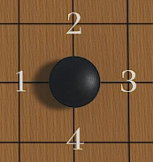
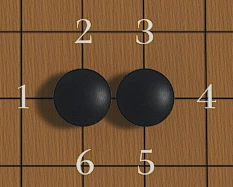
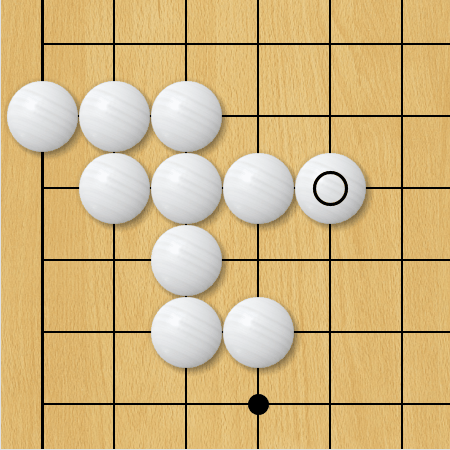
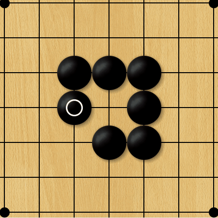

围棋规则 |
| 基础规则 |
| 围棋的棋盘由纵横各 19 条线交叉组成，形成了 361 个交叉点。棋子分为黑白两色，黑子先行，双方交替落子于棋盘的交叉点上。终局时比较双方所占据的交叉点数量，多者获胜。 |
| 落子后，上下左右相邻的为整体，紧邻其的交叉点为该棋子的 “气”，棋子的 “气” 被对方棋子完全占据时，这颗棋子或这组棋子就处于 “无气” 状态，会被对方提掉并从棋盘上移除。 |
|  |  |  |  |
| 胜负判定的基本方式是在棋局结束时，通常需要进行 “数子” 或 “数目” 操作。在 “数子” 规则中，黑方需达到 184.25 子及以上才能获胜（因黑方先行有一定优势，所以有贴目规定），白方则需达到 176.75 子及以上。而 “数目” 规则则是通过计算双方所围的空（目）以及吃掉对方棋子的数量来判定胜负。 |
在落子过程中，还有一些特殊规则。例如 “禁着点”，即如果一方在某一交叉点落子后会使自己的棋子处于无气状态且无法提掉对方棋子，那么这个交叉点就是该方的禁着点，不能在此落子。还有 “打劫” 规则，当一方提掉对方一颗棋子后，对方不能立即在该位置回提，需在其他地方下一手棋后才能再次提回，以防止棋局陷入无限循环的局面。 |
水平划分规则 |
围棋作为一项极具魅力与深度的棋类游戏，其有着严谨且丰富的升降级体系，无论是业余棋手、职业棋手还是活跃于网络平台的围棋爱好者，都遵循着各自不同的规则在围棋之路上前行与成长。下面将为大家详细介绍业余、职业和网棋的升降级规则。 |
业余围棋通常先从级位开始划分，这是初学者的阶段。一般最低是 30 级左右，数字越大水平越低。例如，30 级的棋手可能刚刚学会围棋的基本规则，对于围棋的战术和策略还处于懵懂阶段。 随着学习和对弈经验的增加，级位会逐步提升。每上升一个级位，代表棋手在围棋技术上有一定的进步。通常级位以 10 级为一个跨度比较常见，如 20 级、10 级等。10 级的棋手已经对围棋的基本定式、吃子技巧等有了初步的掌握，能够完成一盘比较完整的棋局，并且对局部的战斗有一定的理解。 |
当棋手达到一定水平后，会进入段位阶段。1 段是业余段位的起始，这个阶段的棋手已经熟练掌握了围棋的基本规则和多种基础技巧，如定式的运用、简单的死活判断和基本的布局思路。他们在棋局中能够有意识地构建自己的地盘和势力，并且对局部的战斗有较好的把握能力。 2 段棋手相比 1 段，在棋艺的稳定性和战术的多样性上有了提升。他们能够更准确地判断棋局的形势，在定式的选择和运用上更加灵活，对于一些复杂的局部战斗，如征子、枷吃等技巧的运用更加熟练，并且开始有了一些简单的中盘作战思路。 3 段棋手的棋艺又更进一层。他们对布局有了更深入的理解，能够根据不同的对手和棋局情况选择合适的布局方式。在中盘战斗中，能够准确地找到对方棋形的弱点进行攻击或者有效地防守自己的薄弱环节，对死活棋形的判断也更加精准，同时在官子阶段也有了一定的计算能力 4 段棋手在围棋技术上已经有了较高的水平。他们对各种定式的变化有深入的研究，能够根据棋局的整体形势灵活运用定式，甚至创造一些局部的定式变化。在中盘战斗中，具备较强的计算能力和形势判断能力，能够在复杂的局面下找到最佳的行棋次序。对于死活问题，他们可以快速地判断出复杂棋形的死活要点，并且能够巧妙地利用死活技巧来获取利益或者摆脱困境。 5 段棋手在围棋理论和实践方面都有深厚的积累。他们的布局思路更加开阔，能够结合全盘形势和对手的棋风制定战略。在中盘战斗中，不仅有强大的攻击和防守能力，还能巧妙地通过弃子等战术来转换局面，争取主动。在官子阶段，能够精确地计算目数，并且根据棋局的胜负形势合理地选择大官子和小官子的争夺顺序。 6 段棋手属于业余围棋中的高手级别。他们对围棋的理解已经相当深刻，在棋局的各个阶段都有出色的表现。在布局阶段，他们能够凭借对围棋理论的深刻理解和丰富的实战经验，走出具有创新性和针对性的布局。中盘战斗中，他们的计算深度和广度令人赞叹，能够在复杂多变的局面中准确地把握战机，通过精彩的攻击或者巧妙的防守来掌控棋局的走向。在官子阶段，他们能够精细地收官，不放过任何细微的目数，并且能够根据棋局的微妙变化调整收官策略，确保棋局的胜利。 7 段和 8 段是业余围棋中非常高的段位。7 段棋手在全国性的业余围棋大赛中往往能够取得优异的成绩。他们的棋艺已经达到了很高的水准，对围棋的理解和运用接近职业棋手的水平。在棋局中，他们能够灵活运用各种战术和策略，无论是布局的战略构思、中盘的激烈战斗还是官子的精细收官，都表现出极高的水平。他们还对围棋的文化内涵和哲学思想有一定的领悟，能够将这些理念融入到棋局之中。 8 段棋手更是业余围棋界的佼佼者。他们在国内乃至国际的业余围棋赛事中都有很强的竞争力。这些棋手通常经过多年的刻苦钻研和大量的实战积累，在围棋的各个领域都有独到的见解。他们的棋局充满了智慧和创造力，能够在复杂的棋局环境下做出最优的决策，并且在面对强大的对手时也能保持冷静，发挥出自己的高水平。 |
| 业余棋手升降级规则 升级条件：通常需要参加各类业余围棋比赛，如青少年赛、业余联赛、地区赛等，积累足够的棋分来逐步晋升段位。不同级位和段位的升级要求有所不同，入门者一般从一段开始，通过比赛积累棋分来进入二段 ，在二段停留一段时间，通过挑战赛或者连续稳定的优秀表现，可以获得晋升资格，每升一级，都需要在规定的时间内保持一定的比赛成绩或棋分积累。 业余 5 段（含）以下：由中国围棋协会授权的承办单位负责。承办单位根据其授权区域、系统内制定的围棋业余等级评定、认证及称号授予和证书管理的晋升标准、办赛要求等规定管理该项工作。 ;业余 6 段：有两种渠道。一是参加全国业余围棋比赛中获得相应名次；二是参加中国围棋协会授权的省级围棋协会或各行业围棋协会举办的省级围棋比赛中获得相应名次，通过中国围棋协会认证后获得。符合授予 6 段条件的赛事须由各省级围棋协会、各行业围棋协会赛前向中国围棋协会报备。 业余 8 段、7 段：由中国围棋协会负责。棋手参加全国业余围棋比赛中获得相应名次，通过中国围棋协会认证后获得相应等级称号。
职业棋手升降级规则 职业棋手的段位主要通过全国段位赛获得。业余棋手转变为职业棋手主要通过参与全国定段赛，在不同年龄组和性别组取得相应名次可获得职业初段，如 2023 年全国定段赛中，青少年男子组前 20 名棋手授予职业初段等。 常规升段：棋手之间段位差距在两段（含）以内的等级分对局（包括国际比赛）将计为升段责任对局。升段计算公式延续原有职业升段赛计算公式，但每个段位的升段责任局数有所增加，升段名单每月公布一次 。 直升五段：凡获得世界女子职业围棋锦标赛冠军的；凡在世界女子围棋团体锦标赛中三连胜以上（含）终结比赛的。两次亚军可以折合成一次冠军计算。在世界女子围棋团体锦标赛中一胜或二胜终结比赛的，等同于获得一次世界亚军。 直升七段：在中韩、中日冠军头衔双边对抗赛中获胜的；在世界围棋团体锦标赛中四连胜以上的（含）。 升九段：获得世界职业围棋锦标赛冠军的（含亚洲杯）；在世界围棋团体锦标赛中三连胜以上（含）终结比赛的；获得世界职业围棋锦标赛两次亚军的（含亚洲杯）。在世界围棋团体锦标赛中一胜或二胜终结比赛的，等同于获得一次世界亚军。 |